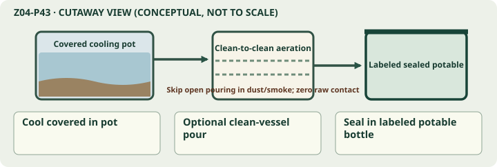

Z04-P43 · Water · New manuscript
Aerate and cool boiled water cleanly without recontamination
Cool boiled water safely and improve flat taste only with sanitized clean-side containers.
When it applies · Water that has completed a full CDC rolling boil (1 minute; 3 minutes above 6,500 feet) in a clean pot.
Equipment · Clean pot lid, two clean sanitized food-grade pouring vessels and clean storage cap.

Actions
- Keep the pot covered while boiling water cools naturally so airborne dust, ash and insects do not enter the clean batch.[W02, W06]
- If flat taste is an issue after cooling, pour the cooled water back and forth between two clean, sanitized containers in clean air, or add a tiny pinch of clean salt per quart if appropriate.[W27, W06]
- Transfer into a labeled, tightly capped potable vessel without touching the inner rim, spout or water surface with unwashed hands or raw utensils.[W06, ED]
Failure recognition · Cooling an uncovered pot beside a dusty campfire or pouring boiled water through an unwashed raw funnel to aerate it.[W02, W06, W27]
Verify · Confirm the pot stayed covered during cooling and any aeration vessels were strictly clean-side sanitized.[W02, W27, W06, ED]
Stop or change course · Skip open-air aeration in dusty, smoky or unsanitary conditions; if raw splashes enter cooled water, re-boil the batch before drinking.[W27, W02, W06]
Evidence and editorial notes
- W02 · CDC · How to Make Water Safe in an Emergency (2024-09-19)
- Section: Boil > Steps for boiling water · Conditions: Microbiologically suspect water with acceptable chemical source; portable heat and safe vessel
Support: Clarify cloudy water first. Rolling boil for one minute; above 6,500 feet for three minutes. Cool and cover in sanitized containers.
Limitations: Does not remove dissolved metals, nitrates, fuel, or cyanotoxins. · Conflicting evidence: Older Track B B009 omitted the 6,500 ft threshold; CDC threshold governs.
Editorial note: Require explicit timer verification after rolling boil starts. · Specialist reviewer: Drinking-water safety and public health
Primary source · checked 2026-11-24 - W06 · CDC · How to Create an Emergency Water Supply (current web edition)
- Section: How to store emergency water; Safe storage containers · Conditions: Potable water intended for emergency storage
Support: Prefer sealed commercial water or clean food-grade tight-closing containers. Avoid containers that held toxic chemicals.
Limitations: Container shelf durability and rotation depend on plastic/material type and storage heat. · Conflicting evidence: None; reinforces strict raw-vs-clean segregation.
Editorial note: Used to enforce labeling and dedicated raw/potable vessel separation. · Specialist reviewer: Drinking-water safety and public health
Primary source · checked 2026-11-24 - W27 · US EPA · Emergency Disinfection of Drinking Water (current web edition)
- Section: Emergency Disinfection > Taste and Aeration · Conditions: Boiled water after cooling in a clean covered container
Support: Boiled water can taste flat from dissolved oxygen loss; pouring between two clean sanitized containers or resting covered improves palatability without re-exposing to raw sources.
Limitations: Open transfer in dusty or unsanitary surroundings risks recontamination. · Conflicting evidence: None; strictly optional palatability step after cooling.
Editorial note: Ensures aeration uses only sanitized clean-side vessels. · Specialist reviewer: Drinking-water safety
Primary source · checked 2026-11-24
Source lineage · EPA emergency disinfection and CDC storage; new manuscript · Classification · New manuscript.